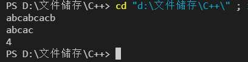
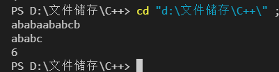
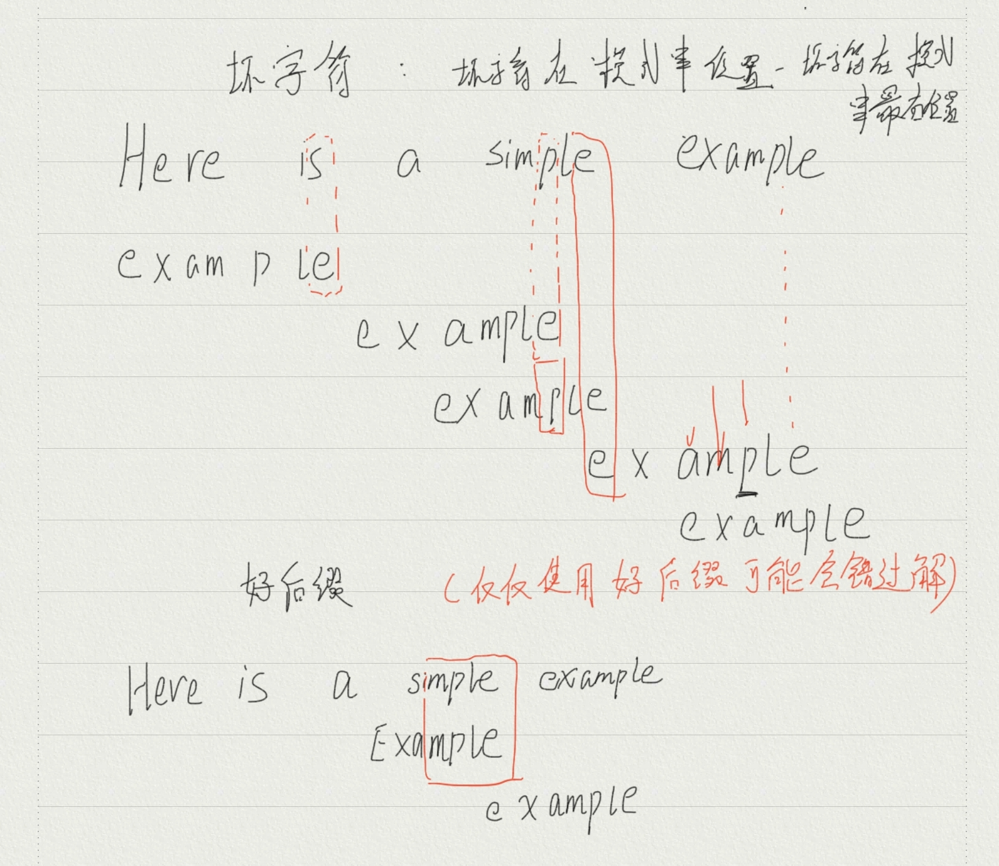

实验报告_1
实验二——串匹配问题
一、实验题目:
给定一个文本，在该文本中查找并定义任意给定字符串。
二、实验目的:
- 深刻理解并掌握蛮力法的设计思想
- 提高应用蛮力法设计算法的技能
- 用蛮力法设计的算法，一般来说，经过适度努力，都可以对算法的第一个版本进行一定程度的改良，改进其时间性能
三、实验要求:
- 实现BF算法
- 实现KMP算法和BM算法
- 分析算法时间复杂性，设计实验程序验证分析结果
四、算法实现分析及结果:
- BF算法
得到主串和模式串后，利用循环语句将模式串逐个字符与主串进行比较，匹配结束时，如果找到了主串的子串与模式串相同，则返回主串下标，如果没找到相同串，则返回**-1**.
- BF算法核心部分代码
1 |
|
- 时间复杂度分析
$$
平均比较次数:(m*(n-m+2))/2
$$
$$
时间复杂度:O(m*n)
$$
- BF算法实验结果

- KMP算法
KMP算法只需要将主串扫描一遍，通过模式串的回溯来进行匹配主串，需要借助一个辅助数组next，next数组用于指明下一次回溯的位置。遍历过程中如果遇到模式串与主串字符不匹配，主串下标不变，在模式串中寻找已匹配模式串部分，查看是否有相同最大前后缀。如果有则直接将前缀部分对齐后缀部分，进行模式串的移动，如果没有则将整个模式串向右移动一位。
- 如果s[i]==T[j] 继续比较S、T下一对字符
- 否则将下标j回溯到next[j]，j=next[j]
- 若j==-1，则将下标i，j分别+1，准备下一次比较
- 若T中所有字符均比较完毕，则返回本趟匹配的返回位置
KMP算法的关键点：如何找到最大真前缀，如何为next数组赋值，怎么寻找已匹配模式串的前后缀

KMP算法核心代码
求next数组
1
2
3
4
5
6
7
8
9
10
11
12
13
14
15
16
17
18
19//方法1
void GetNext(char T[],int *next)
{
next[0]=-1;
int k=-1,j=0;
while(j<strlen(T))
{
if((k==-1)||(T[j]==T[k]))
{
j++;
k++;
next[j]=k; //为next数组赋值
}
else
{
k=next[k]; //让k回溯
}
}
} //快速求next数组方法，时间复杂度低1
2
3
4
5
6
7
8
9
10
11
12
13
14
15
16
17
18
19
20
21//方法2
void GetNext(char T[],int *next)
{
int i,j,len;
next[0]=-1;
for(j=1;T[j]!='\0';j++) //依次求next[j]
{
for(len=j-1;len>=1;len--)
{
for(i=0;i<len;i++)
if(T[i]!=T[j-len+i])break; //依次比较T[0]~T[len-1]与T[j-len]~T[j-1]
if(i==len)
{
next[j]=len;
break;
}
}
if(len<1)
next[j]=0;
}
} //直接蛮力法求模式串中相同前后缀的长度
- KMP代码
1
2
3
4
5
6
7
8
9
10
11
12
13
14
15
16
17
18
19
20
21
22
23
24
25
26
27int KMP(char S[],char T[])
{
int i=0,j=0;
int *next=new int[strlen(T)];
GetNext(T,next); //先获得辅助数组
while(S[i]!='\0'&&T[j]!='\0')
{
if(S[i]==T[j])
{
i++;
j++;
}
else{
j=next[j]; //j回溯到模式串和主串相同部分字符的下一位
if(j==-1) //next[0]=-1
{
i++;
j++;
}
}
}
if(T[j]=='\0') //模式串遍历完成
return (i-strlen(T)+1);
else
return 0;
}时间复杂度分析
$$
只遍历一次主串:O(n+m)
$$KMP算法实验结果

- BM算法
不同于BF、KMP算法的从左向右匹配，BM算法的模式串从右向左匹配。BM算法的两个规则：坏字符规则和好后缀规则。
坏字符规则：
当文本串中的某个字符跟模式串的某个字符不匹配时，我们称文本串中的这个失配字符为坏字符，此时模式串向右移动。 若”坏字符”不包含在模式串之中，则最右出现位置为-1
$$
移动位数=坏字符在模式串中的位置-坏字符在模式串中最右出现位置
$$
好后缀规则：
当字符失配时，模式串后移，模式串与主串匹配的部分就叫好后缀，好后缀有许多个，模式串移动时，我们通常选择最长好后缀，若无法在模式串中找到匹配好后缀，则将好后缀递减。
$$
移动位数=好后缀的位置-搜索词中的上一次出现位置
$$

- BM算法核心代码
1 | int Pattern(string pattern,string target){ //判断模式串和主串匹配位置函数 |
- 时间复杂度分析
$$
最好情况:O(n)
$$
$$
最坏情况：O(m*n)
$$
五、实验感悟
此次实验横向对比了BF、KMP、BM算法。BF算法就是简单地遍历字符串，利用双重for循环实现，虽然思路很简单，但是时间复杂度高，计算速度慢。KMP算法的关键在于设计next数组，以及非常巧妙的采用了指针对主串进行操作而不是对模式串进行操作，通过回溯指针和移动指针来实现匹配效果，较易理解实现且大幅降低时间复杂度。BM算法引入了好后缀和坏字符的概念，通过这两种方式去判断哪种能尽量多的跳过字符寻找目标字符串，这个算法涉及到好后缀和坏字符的判断以及移动长度判断计算等多个函数，相较于前两个算法不易实现，但也是时间复杂度最低的。